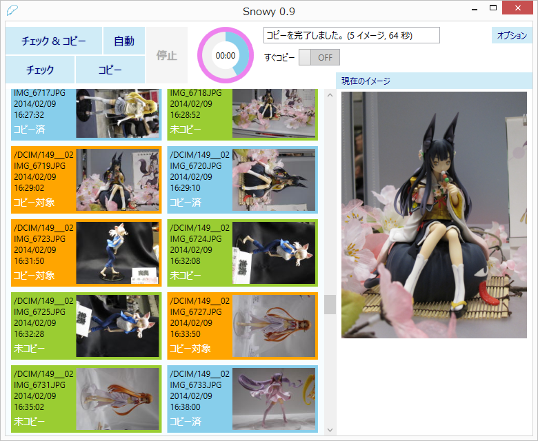
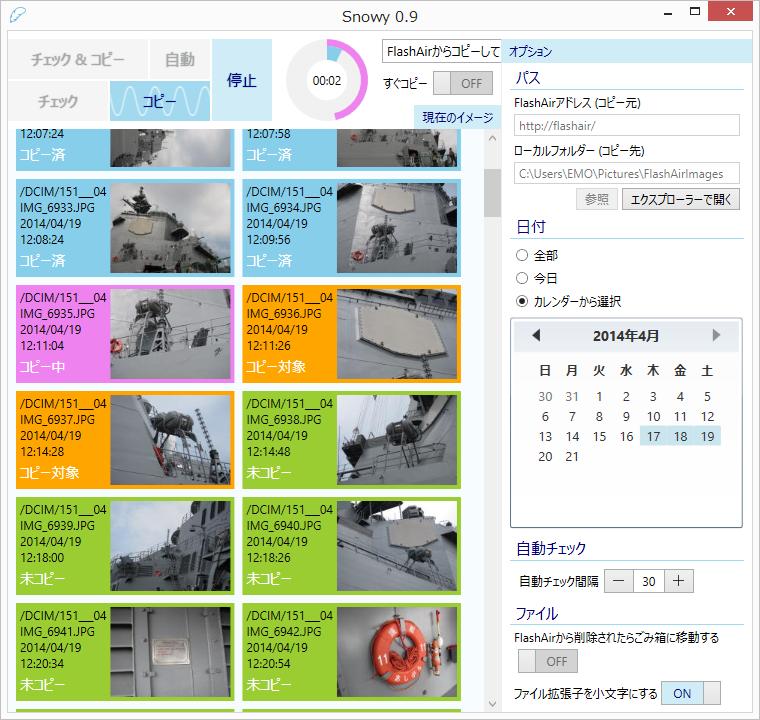

SnowyはFlashAirから無線接続で画像をコピーするためのWindowsデスクトップアプリです。画像をまとめてコピーしたり、サムネイルから一つずつ選んだりできます。新しい画像を一定間隔で自動チェックさせることもできます。


フィギュアについて
- GOMUO(2) : 食蜂操祈
- あおしんごう : 黒蜜ねね
- タマツキアソビ : ブラック羽川 猫物語『白』
- R.GLATT-CC : アスナ (ティターニア Ver)
- とらbrindle : ハートキャッチプリキュア！無限シルエット
ダウンロード
Download
最新リリース